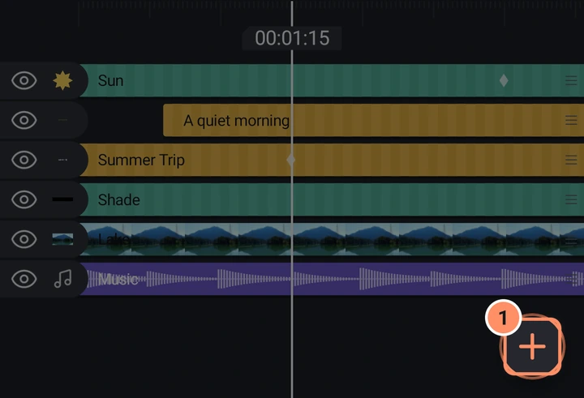
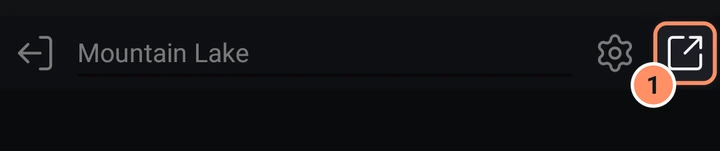

শুরু করা
AbsentMotion ইনস্টল করুন, আপনার প্রথম প্রজেক্ট তৈরি করুন, কিছু অ্যানিমেট করুন এবং এক্সপোর্ট করুন।
ইনস্টল
AbsentMotion ইতিমধ্যে এই ফোনে ইনস্টল করা আছে। এই পেজটি একটি প্রথম প্রজেক্টের মধ্য দিয়ে যায়। অন্য পেজগুলো প্রতিটি স্ক্রিন বর্ণনা করে।
প্রথম শুরু
প্রথমবার অ্যাপটি খুললে হোম স্ক্রিনের আগে দুটি স্ক্রিন দেখায়।
- আপনার ভাষা বেছে নিন। অ্যাপটিতে 26টি ভাষা আছে: ইংরেজি, ইন্দোনেশীয়, হিন্দি, পর্তুগিজ (ব্রাজিল), স্প্যানিশ (লাতিন আমেরিকা), স্প্যানিশ (স্পেন), ফিলিপিনো, ভিয়েতনামি, থাই, মালয়, আরবি, ফারসি, উর্দু, তুর্কি, রুশ, বাংলা, জাপানি, কোরিয়ান, চীনা (প্রথাগত), চীনা (সরলীকৃত), ফরাসি, জার্মান, ইতালীয়, পোলিশ, ডাচ এবং ইউক্রেনীয়। অ্যাপে থাকলে আপনার ফোনের নিজস্ব ভাষা প্রথমে তালিকাভুক্ত হয়। আপনি পরে সেটিংস-এ এটি পরিবর্তন করতে পারেন।
- এই ডিভাইসটি কী করতে পারে তা দেখুন। একটি দ্রুত পরীক্ষা দেখায় কোন ভিডিও ফরম্যাট এবং সাইজ আপনার ফোন এক্সপোর্ট করতে পারে এবং এটি কত দ্রুত (দ্রুত, ভালো বা বেসিক)। এটি একবার চলে, কয়েক সেকেন্ড সময় নেয়, এবং সবকিছু ফোনেই থাকে। আপনি এড়িয়ে যান-এ ট্যাপ করতে পারেন। একই স্ক্রিনে একটি সুইচ আছে যা অ্যাপকে প্রতিবার খোলার সময় একবার GitHub-এ নতুন ভার্সন নম্বরের জন্য জিজ্ঞাসা করতে দেয়। এটি চালু অবস্থায় শুরু হয় এবং অন্য কিছু পাঠায় না।
অ্যাপটি শুরুতে কোনো অনুমতি চায় না। ছবি, ভিডিও, অডিও, ক্যামেরা ও মাইক্রোফোনের অ্যাক্সেস প্রথমবার এমন কোনো ফিচার ব্যবহারের সময় চাওয়া হয় যার জন্য সেগুলো প্রয়োজন।
আপনার প্রথম প্রজেক্ট তৈরি করুন
- হোম স্ক্রিনে নিচে গোল + বোতামে ট্যাপ করুন। এটি নতুন প্রজেক্ট।
- একটি আকার (16:9, 9:16, 4:5, 1:1 বা 4:3), একটি রেজোলিউশন (1080p একটি ভালো শুরু) এবং একটি ব্যাকগ্রাউন্ড বেছে নিন। নিশ্চিত না হলে ফ্রেম রেট অপরিবর্তিত রাখুন। প্রজেক্ট তৈরি করুন ট্যাপ করুন। এডিটর একটি খালি প্রজেক্টে খোলে। বিস্তারিত: একটি প্রজেক্ট তৈরি করা।
- টাইমলাইন এলাকার নিচে ডানদিকে গোল + ট্যাপ করুন এবং যোগ করার জন্য কিছু বেছে নিন: একটি শেপ, মিডিয়া ট্যাব থেকে একটি ছবি বা ভিডিও, বা টেক্সট।
- লেয়ার সরাতে প্রিভিউতে ড্র্যাগ করুন। এটিকে বড় বা ছোট করতে পিঞ্চ করুন।
- সময়ের মধ্য দিয়ে যেতে টাইমলাইনে বামে বা ডানে ড্র্যাগ করুন। সময়ে একটি লেয়ার সরাতে, এর বার প্রেস করে ধরে রাখুন, তারপর ড্র্যাগ করুন। এটি ট্রিম করতে, এটি নির্বাচন করুন এবং এর প্রান্তে গোল গ্রিপগুলো ড্র্যাগ করুন।
- এটি দেখতে প্লে বোতাম প্রেস করুন।


কোনো সেভ বোতাম নেই। প্রতিটি পরিবর্তনের পর এক মুহূর্তে প্রজেক্ট সংরক্ষিত হয়।
কিছু অ্যানিমেট করুন
AbsentMotion-এ অ্যানিমেশন কীফ্রেম দিয়ে তৈরি: একটি কীফ্রেম এক মুহূর্তে একটি মান (একটি অবস্থান, একটি আকার, একটি অপাসিটি) সংরক্ষণ করে, এবং অ্যাপটি কীফ্রেমের মাঝের নড়াচড়া নিজে পূরণ করে।
- প্রিভিউ বা টাইমলাইনে একটি লেয়ারে ট্যাপ করুন। নিচে টুলের একটি গ্রিড দেখা যায়।
- ট্রান্সফর্ম ট্যাপ করুন। সরান ট্যাব খোলা আছে।
- যেখানে নড়াচড়া শুরু হওয়া উচিত সেখানে প্লেহেড রাখুন এবং বাম কলামে কীফ্রেম বোতাম (হীরক) ট্যাপ করুন।
- প্লেহেড পরের সময়ে সরান এবং লেয়ারটি একটি নতুন জায়গায় ড্র্যাগ করুন। যেহেতু প্রপার্টির ইতিমধ্যে একটি কীফ্রেম আছে, আপনার জন্য একটি দ্বিতীয়টি তৈরি হয়।
- প্লে করুন। নড়াচড়ার গতি বাড়াতে, কমাতে বা বাউন্স করাতে ইজিং বোতাম (কার্ভ) ট্যাপ করুন। কীফ্রেম এবং ইজিং দেখুন।

দ্রুত ফলাফলের জন্য, একটি লেয়ার নির্বাচন করুন এবং প্রিভিউর নিচে ডানদিকে গোল অ্যানিমেট বোতাম ট্যাপ করে একটি ইন, আউট বা লুপ অ্যানিমেশন বেছে নিন, অথবা ইফেক্ট খুলুন এবং মুভ ইফেক্টগুলোর একটি চেষ্টা করুন।
এক্সপোর্ট
- উপরের বারে শেয়ার আইকনে ট্যাপ করুন (নাম এক্সপোর্ট ও শেয়ার)।
- ভিডিও কার্ড নির্বাচিত আছে। এক্সপোর্ট ট্যাপ করুন।
- প্রগ্রেস বার শেষ হওয়ার জন্য অপেক্ষা করুন। এদিকে আপনি অন্য অ্যাপে যেতে পারেন: একটি নোটিফিকেশন প্রগ্রেস দেখায়।
- ভিডিও শেয়ার ট্যাপ করুন, অথবা Movies/AbsentMotion-এ ফাইলটি খুঁজুন।

সমস্ত বিকল্প (ফরম্যাট, রেজোলিউশন, ফ্রেম রেট, GIF, শুধুমাত্র অডিও) এক্সপোর্ট পেজে আছে।
জিনিসগুলো কোথায়
| আমি চাই | যান |
|---|---|
| একটি প্রজেক্ট শুরু করতে | হোম স্ক্রিনে + |
| একটি লেয়ার যোগ করতে | এডিটরে + (কিছু নির্বাচিত না থাকলে দেখানো হয়) |
| একটি লেয়ার পরিবর্তন করতে | এটিতে ট্যাপ করুন, তারপর টুল গ্রিড ব্যবহার করুন |
| অ্যানিমেট করতে | একটি প্যানেলে কীফ্রেম বোতাম, বা অ্যানিমেট বোতাম |
| একটি ইফেক্ট যোগ করতে | একটি লেয়ার নির্বাচন করুন, ইফেক্ট, ইফেক্ট যোগ করুন |
| আনডু করতে | প্লে বারের প্রথম বোতাম |
| এক্সপোর্ট করতে | উপরের বারে শেয়ার আইকন |
| একটি সেটিং পরিবর্তন করতে | হোম স্ক্রিনের উপরে বামে মেনু বোতাম |
পরবর্তী
- হোম স্ক্রিন এবং এডিটর স্ক্রিন প্রতিটি বোতাম দেখায়।
- ইফেক্ট ব্যবহার করা ইফেক্ট লাইব্রেরি ব্যাখ্যা করে।
- সমস্যা সমাধান ও প্রশ্ন-এ সাধারণ সমস্যার উত্তর আছে।